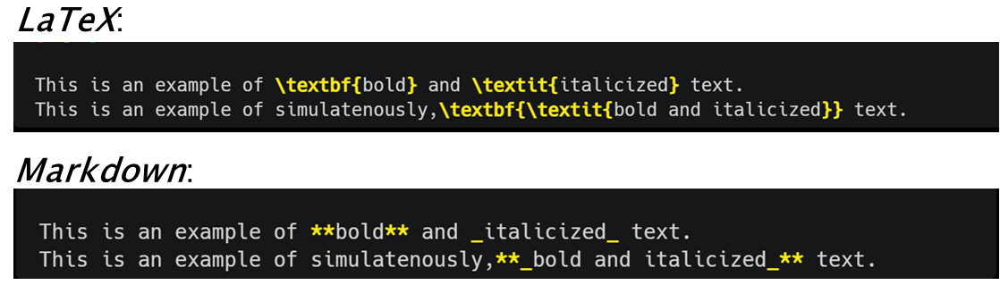

3. An Introduction to Markdown
3.1 What is Markdown?
Markdown is a simple markup language created by John Gruber in 2004. As a markup language, Markdown, allows you to format plain text to enhance presentation and readability of your text. From a technical perspective, Markdown is two things: (i) a syntax or grammar for formatting plain text files and; (2) a software tool that converts plain text files to HTML. As a software Markdown is free and platform independent, meaning it can br run any device using any operating system.
When using Markdown you annotate your text with chracters, such as *s or #s, to achieve a desired formatting effect on that text (e.g. make a heading). In this sense it is different from WYSIWYG editors like Microsoft Word where you use buttons, keystrokes and mouse strokes to acheive a desired effect. Also, unlike WYSIWYG editors, you won’t see the fruit of your formatting labours without an additional step of rendering your plain text file or notebook document into an HTML or other document format (these days some IDE’s, e.g. the visual markdown editor in RStudio, support WYSIWYG rendering of Markdown in real time).
3.2 Why Markdown for Literate Programming?
Recall that for literate programming, the narrative, rather than code, is the key focus, hence relevant and appropriate formatting of your text (e.g. using bold or italic font or incorporating images) is essential for other humans (perhaps your colleagues) to make sense of and engage with your code or analysis. Hence, literate programming involves mixing your code (written in Python,R etc.) with a document formatting or typesetting language to format your expositry narrative. HTML and LaTeX are two popular markup languages utilized for document formatting in literate programming for scientific research. However, unlike these other markup langguages, Markdown is simple and lightweight. This means you can focus on constructing engaging and efficient narrative without kicking a fuss over what code or tag is required to make your text appear, for e.g., in bold or italic font. Compared to other markup languages, you can learn Markdown quickly and hence focus more on your content writing.
Figure 3.1 displays a comparison of the code require to format plain text into bold, italic or both in LaTex versus Markdown. From the code below it showed be obvious how the markdown syntax is much simpler than LaTeX (or indeed other markup languages). Additionally, withouth even rendering the markdown annotated text, it remains easily readable by humans. More complex formatting like generating tables, inserting images, requires even more complex code in markup languages like LaTex or HTML, but remains simple in Markdown as you will see in the next section. This simplicity of Markdown means there is little overhead in learning the document formatting language for literate programming, freeing your mind to focus on your content.

Markdown’s growing popularity as the document formatting language of choice in literate programming needs is reflected in the availability of markdown support (in many cases right out of the box without any additional installation!) for popular IDEs and notebook formats such as RStudio, VS Code, Jupyter Notebooksand even GitHub (a code hosting platform for colloboration and version control - if you are unfamiliar with GitHub, don’t worry, this will be covered in a following course).
Basic Markdown vs. Markdown Extensions
Markdown’s simplicity comes at a cost: there are only a limited amount of formatting effects available to you in basic or native Markdown. However, many applications supporting Markdown e.g. Jupyter Notebooks, R/RStudio,
GitHub etc. provide thier own extensions of Markdown syntax which let you do more complex formatting with the simplicity of Markdown-like syntax. Additionally,
if your needs ever grow, worry not, tools like pandoc allow you to mix more flexible formatting languages such as LaTeX and/or HTML with Markdown allowing you to format your text to
your heart’s desire.
3.3 How to use Markdown
It’s time to get our hands dirty and start getting some practise in how to use Markdown to format our text. To be able to follow the lessons below, you are going to need a Markdown editor, where we can write the Markdown language in a document but then also render or preview the document so we can see if the desire formatting effect was achieved.
If Rstudio your go to tool, you can do this by:
- Go to the File menu, select New file, theb select Quarto Document…, alternatively you also use the new file button to do the same, and this is what is done in the video below. This will open up a dialog box with several options. Leave everything as default but uncheck the
use visual markdown editoroption. Feel free to add a Title and Author in the relevant fields, then hit the create button. - This will open a new Quarto Document in RStudio’s source editor (this where you normally write your R scripts). You can then add your text and markdown annotation in the body of the document. The body of the document referes to any space below the text between the
---at the top. This latter section is called the YAML and controls how the document will look when rendered. You can just ignore the YAML for now, we’ll talk more about this in the (next lesson)[../Chapter_04]. Note that RStudio will automatically generate some standard text, code and markdown to give you flavour of this literate programming document works. Optional: delete everything in the body of the file making sure not to delete the YAML. - After adding your text and markdown annotation to the document hit the
renderbutton to generate an HTML document (default). If you haven’t yet saved your document, RStudio will ask you save the document before rendering. Once saved, RStudio will generate an HTML docuement that shows your text but formatted according to any markdown code. The next time you make a cahnge to your Quarto Document and hit render, RStudio will automatically save the changes to your Quarto document before rendering.
Rendering Markdown without a rendering step
Since 2021 RStudio now has also has a [visual markdown editor]( that renders your markdown formatting live as you type it in the Quarto document, however, I wouldn’t recommend this for the exercises below.
If you are using JupyterNotebooks , you can create markdown cells to write formatted text in markdown:
- In your JupyterNotebook, select Markdown from the drop-down menu on the centre middle of the screen.
- Write your text and add your markdown formatting as you please within this cell.
- In Jupyter Notebooks, you will immediately see the markdown annotation and the resulting formatting on the screen. To see the formatting only, hit the
Runbutton
Finally, to learn markdown, we don’t necessarily need or , we can also use a standalone Markdown editor. Dillinger is a popular web-based Markdown editor and is sufficient to follow the rest of this lesson. If you want to use Dillinger, just head on over to the link and see the video below on how to use this editor. It is extremely simple to use, write your text and markdown in the editor window to the left of your screen and you will immediately see the results in the preview window on the right.
You can use any of the 3 options from above to attempt the Exercises below.
3.3.1 Formatting text
You should have already seen examples of how to italicise or embolden you text (and both simulatenously) with markdown. There is other useful markdown sytnax for example for starting a new paragraph, use a blank like to seperate your paragraphs or if you want a monospaced font to represent code in your text, enclose the relevant code in single backticks:`\
Exercise
Below is some text produced using markdown formatting. Use your preferred markdown editor, to write markdown annotated text, to achieve the following result:
The mean() function on line 13 calcualtes the average of the vector.
Make sure to render your markdown text to make sure it works like you think it should.
Solution
The `mean()` function on `line 13` calcualtes the **average** of the vector.
As mentioned in Section 3.2, Markdown’s simplicity comes at a cost. Not all formatting elements are natively represented in markdown. Depending on your application an extended syntax for Markdown may exist (e.g. Rmarkdown, which may offer a solution. In many cases HTML can help you acheive the desired result. Most applications rendering Markdown also support HTML. This does not mean you need to know HTML but you may have to rely on your googling or prompt engineering skills.
Exercise
There is no native support for sub- or superscripts in markdown, however HTML tags can do the trick. Use your technical sophistication (googling or otherwise) to write Markdown- (and HTML) formatted text text to achive the following result:
An example of a subscript is C02. An example of a superscript is 33=27.
Make sure to rener your markdown text to make sure it works like you think it should.
Solution
An example of a subscript is C0<sub>2</sub>. An example of a superscript is 3<sup>3</sup>=27.
<sub></sub> and <sup></sup> are the HTML tags for subscripts and superscripts respectively. Some Makrdown editos also support encapsulating text in \^ or \~ for formattting superscript and subscript. respetively.
3.3.2 Adding Headers
Your literate programming document needs to be divided into sections. Perhaps you sub-sections or sub-sub-sections? Markdown provides simple syntax for header formatting that provides 6 levels of headings to fullfill your sub-sectioning needs. To render headers using markdown all you need to do is start a line with a #, followed by a space and then your title, like so:
Headers
#### My Excellent Title
My Excellent Title
The number of # controls the size or level of the headers - more means smaller headers.
Exercise
The following headers have been produced using Markdown. Can you reproduce them using Markdown-formatted text?
My smaller section title
This is my other header
Solution
#### My smaller section title
##### This is my _other_ header
3.3.3 Making Lists
Every now and then, documentation of your code or analysis will need a list. Maybe it is a list of dependencies your colleague s need to run your code or perhaps it a list of genes you need to highlight in your latest gene expression anlaysi. It is easy to generate lists in Markdown. Basic Markdown supports ordered (i.e. numbered) or unordered lists.
You can make ordered ordered lists by adding line items with numbers followed by periods. The numbers don’t have to be in numerical order, but the list should start with the number one.
Ordered lists
1. first item
2. second item
3. third item
- first item
- second tiem
- third item
You can generate an unordered list, add dashes (-), asterisks (*), or plus signs (+) in front of line items.
Unordered lists
* first item
* second item
* third item
- first item
- second tiem
- third item
Exercise
It is easy to generate nested lists in Markdown. Can you reproduce the following nested list using Markdown-formatted text?
- First item
- Second item
- Third item
- Indented item A
- Indented item B
- Fourth item
Solution
1. First item
2. Second item
3. Third item
- Indented item A
- Indented item B
4. Fourth item
3.3.4 Adding Images and Links
Everynow and then you may need to provide a link in your literate document. You can provide links in basic Markdown in two ways. The first one we demonstrate are called _inline_links: here you provide the text of the link in square brackets ([ ]`) and the link itself follows in paranthesis.
Inline links
[Visit Elixir!](https://elixir-europe.org/)
The other type of link in basic Markdown is a reference link. In this case the link is to another place in your literate document itself, kind of almost like a citation.
Reference links
``` Want to do Repdroducible Science?. Here are some practical guides. Don’t forget to read this article in its entirety.
```
Want to do Repdroducible Science?. Here are some practical guides. Don’t forget to read this article in its entirety.
The “references” above are the second set of brackets: link one and another-link. At the bottom of a Markdown document, these brackets are defined as proper with a colon and then links to outside websites. An advantage of the reference link style is that multiple links to the same place only need to be updated once, as you would expect from a citation management software e.g. (Zotero), but as you’ll see later there are better ways to do citations using extended in Markdown. Also note the reference links (the one at the bottom) don’t actually appear in the renderded markdown document above.
Similar to links you can add images in two ways. Additionally images can be online urls or from your local computer (in which case you need to provide the path to the image on your local computer instead of the url). Similar to links, one way to displayimg images is called inline image link. To generate one if these you add an exclamation mark (!), followed by square brackets ([ ]) that can optional include alt text the image (to make your content more accessible for visually impaired readers) and then finally the link (or path) to the image in parenthesis.
Inline image links

"Artwork from "Hello, Quarto" keynote by Julia Lowndes and Mine Çetinkaya-Rundel, presented at RStudio Conference 2022. Illustrated by Allison Horst."

“Artwork from “Hello, Quarto” keynote by Julia Lowndes and Mine Çetinkaya-Rundel, presented at RStudio Conference 2022. Illustrated by Allison Horst.”
You can make reference image links very similar to how you would make inline links. Redoing the inline image link is a reference image link is left as an exercise for the reader.
3.3.5 Making Tables
At some point in your literate document, you may want to present information in a table. Although basic Markdown does not come with a syntax to make tables, almost all extensions now have a universal syntax to do so.
To make a table, use three or more hyphens (—) to create each column’s header, and use pipes (|) to separate each column.
Tables
| Column 1 | Column 2 |
| ----------- | ----------- |
| blah | blah |
| blah | blah |
| Column 1 | Column 2 |
|---|---|
| blah | blah |
| blah | blah |
Exercise
Can you write the Markdown-formatted text to generate the exact following table (don’t forget the cell alginment)?
| Gene | p-value |
|---|---|
| Gene A | 0.1 |
| Gene B | 0.005 |
| Gene C | 0.01 |
Solution
| Gene | _p-value_ |
| :----------:| :--------:|
| Gene A | 0.1 |
| Gene B | 0.005|
| Gene C | 0.01 |
Making tables in Markdown…
Making small tables is simple enough but making larger tables can get painful in markdown. If you need to make tables from your own data, R or Python will have appropriate extensions to help you with that. For other larger tables in markdon the Markdown Tables Generator is a great tool. Make your table using their graphical interface and then copy the generated Markdown- formatted text into your file.
3.3.6 Paragraphs
Formatting paragrahs is simple but perhaps not as intuitive in Markdown. For example, consider the verse below (I got ChatGPT to wax poetic about the graces of Markdown):
In the realm of code, where words and logic intertwine,
There exists a tool, both simple and sublime.
Markdown, the poet’s brush, the programmer’s aid,
Unveils the advantages of a seamless cascade.
You may be tempted to think, that way you format a pargraph like this in Markdown would be like so:
In the realm of code, where words and logic intertwine,
There exists a tool, both simple and sublime.
Markdown, the poet's brush, the programmer's aid,
Unveils the advantages of a seamless cascade.
Unfortunately, if you did this the whole verse would come in a single line! Not very fitting for a poem.
To acheive the desired affect, you can enforce a hard break by inserting a new line between each line of the verse:
Hard breaks for formatting
In the realm of code, where words and logic intertwine,
There exists a tool, both simple and sublime.
Markdown, the poet's brush, the programmer's aid,
Unveils the advantages of a seamless cascade.
In the realm of code, where words and logic intertwine,
There exists a tool, both simple and sublime.
Markdown, the poet’s brush, the programmer’s aid,
Unveils the advantages of a seamless cascade.
The hard break works but not the formatting is now disconnected between the Markdown document and the rendered output. A more subtle way to achieve this sort of paragraph formatting effect is to use what is called soft break. A soft break involves inserting two blank spaces with the Space key at the end of each line. A soft break acheives the same effect a a hard break but leaves more of a semblance between the text in the Markdown document and the final rendered document. which may be more desirable in several instances.
Exercise
Here is the last verse from the ChatGP epic poem about the advanatges of Makrdown for literate progamming:
So let markdown be your ally, your creative friend,
In the realm of literate programming, where wonders never end.
For within its simplicity lies a powerful tool,
Unleashing the potential of both scholar and fool.
Use soft breaks in Markdown to recreate the formatted verse above.
3.4 Summary
- Markdown is a simple language for formatting text.
- Markdown is not the only tool for formatting text but it’s easy to learn making it one of the most popular tools for various purposes including Literate Programming.
- Markdown is supported by many of the popular IDEs for , and other programming languages.
- Although basic Markdown has limited functionality, many extensions, often language-specific, exist to enhance Markdown’s capability.
- Finally, in some platforms e.g. RStudio, Markdown can be combined with other formtting or typesetting languages such as HTML or LaTeX.
3.5 Further Learning and Resources for Markdown
The above should give you enough Markdown to get started and follow any later lessons. There are a handful os basic markdown elements that are covered in the Markdown Guide below and there are plenty of extensions as well. If you want more, here is a very short selection of some resources that might be helpful:
- Markdown Guide offers a short and handy reference to the basic syntax or grammar of markdown.
- Want to practise some more markdown? Try this excellent, standalone Markdown tutorial. Some of the examples on this page are based on these lessons.
- Several application for e.g. R and Github use their own extensions of Markdown. These means you not only get the basic Markdown syntax but also some simpler extensions for more complex formatting (HTML and LaTeX can wait). Some of this extended syntax is is documented here.
- A nifty cheatsheet for basic markdown can be handy.
- A cheatsheet for extended Markdown in Jupyter Notebooks going beyond basic Markdown.
- R users fret not, there is also a reference cheatsheet for extended Markdown syntax in R (also known as Rmarkdown).